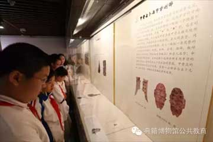
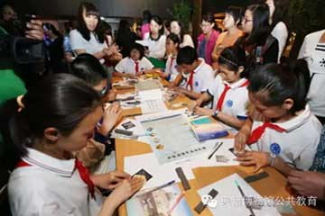

-
详情
走进典籍博物馆大课堂之“灿烂的中华文化”
5月20日，“青少年走进典籍博物馆互动体验系列活动”之“灿烂的中华文化”活动在国家典籍博物馆顺利举行。本次活动是我馆典籍大课堂的重要组成部分，以“灿烂的中华文化”为主题，分为听、看、写、寻、展五个环节，让青少年通过参观讲解和动手制作相结合的方式了解文字的起源，体验中华文化的博大精深，增强对中华文化的传承和保护意识。本次活动由中国科学院附属实验学校师生与国家典籍博物馆讲解老师共同完成。活动内容丰富、形式多样，较好地发挥了国家典籍博物馆的公共教育职能。
2015/05/02 -
详情
走进典籍博物馆大课堂2015年元旦活动安排
中华文明源远流长，非物质文化遗产更是华夏悠悠文化的见证。在这里，国学、历史、篆刻、绘画、手工等等应有尽有。在讲解员老师的带领下，你可以欣赏国图馆藏的与文字主题相关的精品文献和特色展品，同时体验使用中国最正宗的文房四宝，用湖笔、徽墨、宣纸、端砚来书写文字；你可以现场观看传承人挥洒墨宝，领略不同少数民族书法的精髓与风采；你还可以亲身体验制作毛笔、抄造宣纸、雕版印刷、抄写贝叶经的全部工序……
2015/05/02 -
详情
走进典籍博物馆大课堂2015年元旦活动安排
中华文明源远流长，非物质文化遗产更是华夏悠悠文化的见证。在这里，国学、历史、篆刻、绘画、手工等等应有尽有。在讲解员老师的带领下，你可以欣赏国图馆藏的与文字主题相关的精品文献和特色展品，同时体验使用中国最正宗的文房四宝，用湖笔、徽墨、宣纸、端砚来书写文字；你可以现场观看传承人挥洒墨宝，领略不同少数民族书法的精髓与风采；你还可以亲身体验制作毛笔、抄造宣纸、雕版印刷、抄写贝叶经的全部工序……
2015/05/02
1
2
3
4